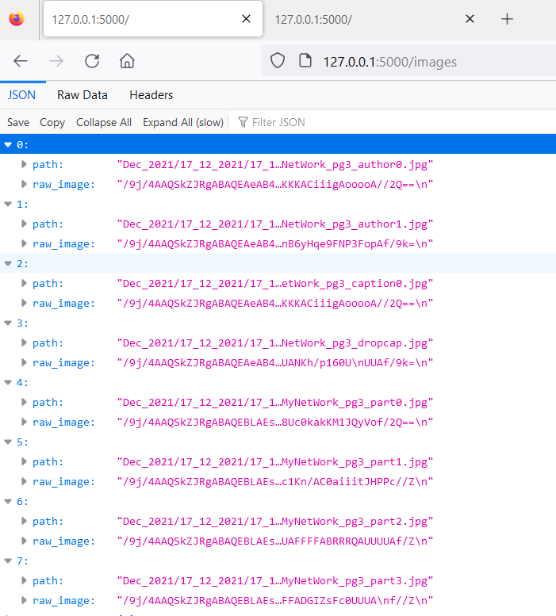
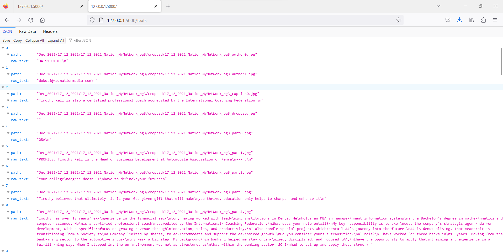

API Building Notes
Contents
API Building Notes¶
When building an API, I found it very helpful for me to:
Sketch out the key tasks that I wanted the API(s) to do for me
Split these key tasks into project phases
At each phase,
Code a sample script to get a feel for the process, troubleshooting any errors along the way
Use the sample script to update a database of choice locally
Identify the resources and sub-resources generated by the processes
Identify the modules, functions and classes resulting from each key process
Arrange the code under a REST API framework of choice
Deploy the code in a VPS after server setup
Fleshing out the processes and tasks¶
The first step having a high-level understanding of the process, which I visualized below:

Fleshing out Image Fetcher API¶
I then wrote a sample Python script, leveraging
The PyGithub library and
A token that I had created in Github with limited scope (I could only access the image repository)
The code is below:
from PIL import Image
from io import BytesIO
import base64
from github import Github
import cv2
import numpy as np
def stringToRGB(base64_string):
imgdata = base64.b64decode(str(base64_string))
img = Image.open(BytesIO(imgdata))
opencv_img = cv2.cvtColor(np.array(img), cv2.COLOR_BGR2RGB)
return [img,opencv_img]
username = 'username' # your Github username
password = 'token'
# authenticate to github
g = Github(username, password)
# get the authenticated user
user = g.get_user()
for repo in user.get_repos():
if repo.full_name == "username/Kenyans_in_Media_NLP_CV_data":
tree = {}
for content1 in repo.get_contents(""):
for content2 in repo.get_contents("/Dec_2021"):
for content3 in repo.get_contents("/" + content2.path):
for content4 in repo.get_contents("/" + content3.path + "/cropped"):
tree[content4.path] = stringToRGB(content4.raw_data['content'])[0]
print(len(tree.keys()))
if len(tree.keys()) == 60:
tree[content4.path].show()
Having ran the sample script, I noticed a couple of things:
I had a really hard time decoding the images because they were represented as
base64objects in their raw state; luckily, this solution helped me get unstuckWhen I ran the script, It ran 60 times before it the error below:

When I dug deeper into the local version of the repo, I realized that the code could only keep going down the tree until it had no more images to dig up, making it throw the error above; data collected was from only 1 newspaper.
The code above gave me the following ideas around the tasks that I would like Image Fetcher to do and the accompanying tests for each task:
Tasks |
Tests |
|---|---|
Access GitHub via username and token |
i) Are credentials hidden in the system? |
Obtain all possible paths to the cropped images from archive |
i) Can the |
Obtain the image and decrypt it |
i) Is the |
Store the image in ElasticSearch database |
i) Is the code output JSONified? |
My framework of choice for building an app was Flask (this article and this one were really great in easing me into the world of APIs). This resulted in the following code within the Flask framework (which gave me all the cropped scanned images in the repository):
from flask import Flask
from dotenv import load_dotenv
import os
from github import Github
app = Flask(__name__)
load_dotenv(r"C:\Users\CT\Documents\GitHub\KIP\kenyans-in-print\.env")
# get username and password
username = os.getenv("g_user")
password = os.getenv("g_pwd")
# authenticate to github
g = Github(username, password)
# get the authenticated user
user = g.get_user()
@app.route("/images", methods=["GET"])
def image_fetcher():
# get image paths
paths = []
for repo in user.get_repos():
if repo.full_name == "CeeThinwa/Kenyans_in_Media_NLP_CV_data":
for content1 in repo.get_contents(""):
months = ['Dec_2021'] # 'Jan_2022', 'Feb_2022'] will uncomment as I crop the images and build the MVP
for month in months:
for content2 in repo.get_contents(f"/{month}"):
for content3 in repo.get_contents("/" + content2.path):
for content4 in repo.get_contents("/" + content3.path + "/cropped"):
paths.append(content4.path)
# get images as raw byte strings
image_tree = {}
for i in range(100):
for repo in user.get_repos():
if repo.full_name == "CeeThinwa/Kenyans_in_Media_NLP_CV_data":
image_tree[i] = {
"path": paths[i],
"raw_image": repo.get_contents("/" + paths[i]).raw_data["content"]
}
return image_tree
One of the learnings that I got was that binary objects, OpenCV or Pillow objects can’t be serialized in JSON, so the images have to maintained as byte strings.
Due to the multiple challenges creating an ElasticSearch database locally (which I cover in more detail here), I decided to focus on testing the code locally by connecting to GitHub to get the data, but not saving any results locally.
Fleshing out Text Reader API¶
This stage was trickier because AWS has a certain way it’s resources can be used, making it more complex than GitHub. The pre-work I had to do from an AWS perspective was:
Create a user account in AWS and map it to the root account
Create a scope to allow the new user full access to Textract
Create a key as the login method for the child user to use Textract
Once this was in play, I ran the following sample script that easily analyzed a local test image with great results:
import boto3
client = boto3.client('textract', region_name='us-east-1')
# Read image
with open('part.jpg', 'rb') as document
img = bytearray(document.read())
# Call Amazon Textract
response = client.detect_document_text(
Document={'Bytes': img}
)
# Print detected text
result_string = ''
for item in response["Blocks"]:
if item["BlockType"] == "LINE":
print ('033[94m' + item["Text"] + '033[0m')
# https://stackoverflow.com/questions64045020using-textract-for-ocr-locally
result_string += ' ' + '033[94m' + item[Text] + '033[0m'
print('n',result_string)
To avoid the hassle of encrypting then decrypting the binary images, I decided to make this API
Fetch directly from GitHub the image
When all GitHub images are in memory, I then call the Textract service and get the result.
The code in the Flask framework thus became:
from flask import Flask
from dotenv import load_dotenv
import os
from github import Github
import boto3
app = Flask(__name__)
load_dotenv(r"C:\Users\CT\Documents\GitHub\KIP\kenyans-in-print\.env")
# get username and password
username = os.getenv("g_user")
password = os.getenv("g_pwd")
# authenticate to github
g = Github(username, password)
# get the authenticated user
user = g.get_user()
# connect to Amazon Textract
client = boto3.client('textract', region_name='us-east-1')
@app.route("/texts", methods=["GET"])
def image_to_text():
# get image paths
paths = []
for repo in user.get_repos():
if repo.full_name == "CeeThinwa/Kenyans_in_Media_NLP_CV_data":
for content1 in repo.get_contents(""):
months = ['Dec_2021'] # 'Jan_2022', 'Feb_2022'] will uncomment as I crop the images and build the MVP
for month in months:
for content2 in repo.get_contents(f"/{month}"):
for content3 in repo.get_contents("/" + content2.path):
for content4 in repo.get_contents("/" + content3.path + "/cropped"):
paths.append(content4.path)
# get images as bytes
text_tree = {}
for i in range(0,60):
for repo in user.get_repos():
if repo.full_name == "CeeThinwa/Kenyans_in_Media_NLP_CV_data":
# to get bytes from github as per https://github.com/PyGithub/PyGithub/issues/576, repo.get_contents(
# "/" + paths[ i]).decoded_content
img = repo.get_contents("/" + paths[i]).decoded_content
# Call Amazon Textract
response = client.detect_document_text(
Document={'Bytes': img})
# get detected text as per https://stackoverflow.com/questions64045020using-textract-for-ocr-locally
result_string = ''
for item in response["Blocks"]:
if item["BlockType"] == "LINE":
result_string += item["Text"] + '\n'
#get raw text
text_tree[i] = {
"path": paths[i],
"raw_text": result_string
}
return text_tree
However, when running the app, it ran into the same problem encountered initially - it could only analyse 60 images, which were taken from articles published on the earliest newspaper as per data in the repository.
Deploying the initial MVP¶
Once I tested the API locally and saw that it gave good enough results:


I then had to deploy it to production.
Preparing the script locally for production¶
The first change I made was to ensure the path matched whatever local environment it was in, so I modified the code to
be the following in the app.py script:
# get contents in the .env file
path = os.getcwd()+"\\kenyans-in-print\\.env"
load_dotenv(path)
The next change I made to the script was to change the Flask environment variable to be in production:
# set environment to production
os.environ['FLASK_ENV'] = 'production'
Finally, I generated the requirements.txt file by running the following command in console:
pip freeze > requirements.txt
I backed up the repo in the cloud and on an external hard disk.
References: